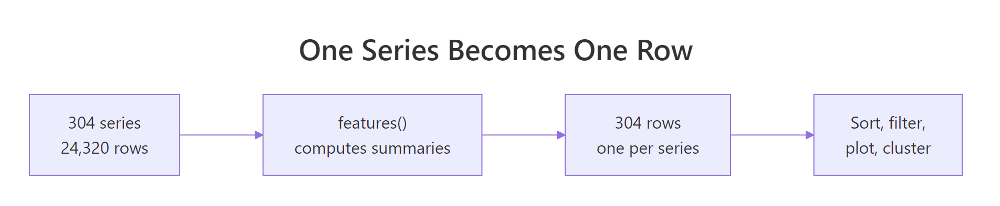
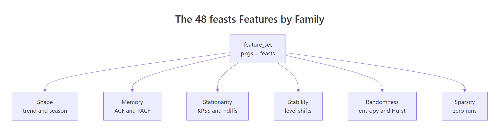
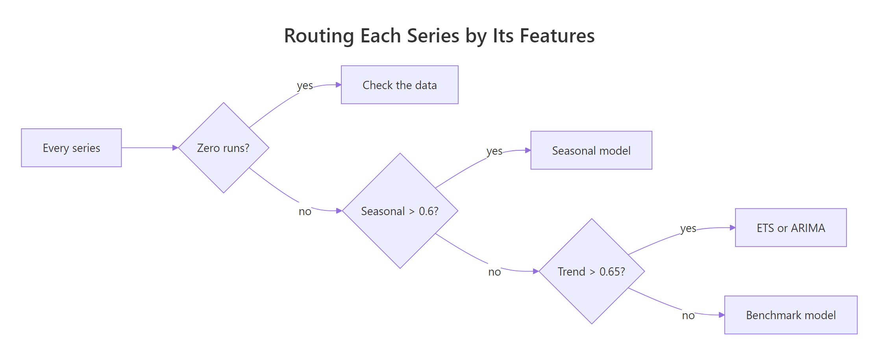

Time Series Features with feasts: Fingerprint Thousands of Series
A time series feature is a single number that summarises a whole series, like how strongly it trends or how seasonal it is. The feasts package computes dozens of them in one call, which turns a pile of thousands of series into one ordinary table you can sort, filter, plot and cluster. This tutorial builds that idea from scratch, and every code block on this page runs in your browser.
What is a time series feature, and why turn a whole series into one number?
The tourism dataset that ships with the tsibble package holds 304 separate Australian tourism series, 24,320 numbers in total. Nobody can look at 304 charts and remember what they saw. So instead of looking at the series, we are going to measure them, one row of numbers per series. That single move is what this whole page is about, and it takes one function call.
Here is what those lines did. tourism is the dataset, Trips is the column being measured, and feat_stl is a recipe that says which numbers to compute. The features() function walked through all 304 series, applied the recipe to each one, and stacked the answers into a table. The pipe |> just passes the thing on its left into the function on its right.
Read the shape of the result and the whole idea clicks. Going in: 24,320 rows of quarterly observations. Coming out: 304 rows, exactly one per series, with 9 measurements each. The Region, State and Purpose columns are still there so you always know which row describes which series.

Figure 1: features() collapses every series into a single row, turning a time series problem into an ordinary table problem.
That output table is the point of the whole exercise. It is a plain data frame, and everything the rest of this page does is built on that one fact.
feat_stl is not special. features() will run any summary function you hand it, including ones you already know.
The list() wrapper names the outputs. avg = mean means "run mean() on each series and call the resulting column avg". You get one column per named function, and the column names are yours to choose.
A feature function does not have to return a single number either. If it returns several values, you get several columns.
quantile() returns five numbers (the minimum, the three quartiles and the maximum), so features() created five columns and named them after the percentages. This is exactly how the built-in recipes like feat_stl work under the hood: they are just functions that return several named numbers at once.
Try it: Compute the median number of trips for every series and call the resulting column ex_median. Show the first 5 rows.
Click to reveal solution
Explanation: Any function that takes a numeric vector and returns a number works as a feature. median needs no special treatment.
How does features() know where one series ends and the next begins?
The last section quietly assumed something big: that R knows the 24,320 rows of tourism are 304 separate series rather than one long one. That knowledge does not come from features(). It comes from the data structure the rows live in, called a tsibble.
A tsibble is a data frame with two extra pieces of information attached. The index is the column holding time. The key is the set of columns that identify which series a row belongs to. Print a tsibble and both are written in the header.
Two lines of that header carry all the meaning. [1Q] says the index column steps forward one quarter at a time, so the time spacing is quarterly. Key: Region, State, Purpose [304] says a series is defined by a unique combination of those three columns, and there are 304 such combinations in the data.
So "Adelaide, South Australia, Business" is one series of 80 quarters. "Adelaide, South Australia, Holiday" is a different series of 80 quarters. When features() runs, it splits on the key, applies your recipe to each group's Trips values, and returns one row per group. The count in the header is the number of rows you will get back.
You can ask for that count directly rather than reading it off the print output.
Most of your own data will not arrive as a tsibble, so you build one. as_tsibble() takes a normal data frame and tells it which column is time and which columns identify a series.
yearmonth("2023 Jan") + 0:11 generates twelve consecutive months, and rep(..., 2) repeats them so both shops have the same calendar. index = month names the time column and key = shop says each shop is its own series. The header confirms it: [1M] for monthly spacing, and shop [2] for two series.
Now features() will treat those two shops separately without being told anything extra.
Two rows out, one per shop, exactly as the key promised. Had you left key = shop off, as_tsibble() would have complained that the month values are duplicated, because without a key it expects one row per time point.
Try it: Build a tsibble from the data frame below, using week as the index and store as the key, then compute each store's average units in a column called ex_avg.
Click to reveal solution
Explanation: The index and key are passed as bare column names, not strings. Store "b" counts down from 50 to 41, so its mean is 45.5.
What do trend strength and seasonal strength actually measure?
feat_stl gave us trend_strength and seasonal_strength_year back in the first section without explaining them. Both are built on a technique called STL decomposition, short for seasonal and trend decomposition using loess, loess being the smoothing method it uses internally. Let's see that technique first on a single series before returning to the numbers.
The idea behind decomposition is that most series are three things added together. There is a slow underlying drift called the trend. There is a repeating within-year pattern called the season. And there is whatever is left over, called the remainder. STL is an algorithm that estimates those three parts from the observed series.
Start by pulling out one series and looking at it. filter() works on a tsibble the same way it works on any data frame.
The Snowy Mountains are Australia's ski fields, and the chart shows it: a tall spike every winter with quiet quarters either side, repeating for twenty years. That is about as seasonal as a real series gets.
Now let STL split it into its three parts. model(STL(Trips)) runs the decomposition and components() returns the pieces as columns.
What came back is a dable, short for decomposition table. It is a tsibble with the three estimated parts added as columns and one extra header line, and that third header line spells out the arithmetic: Trips = trend + season_year + remainder. Look at row 3, the winter quarter of 1998. Trips were 310, the trend at that moment was 153, the seasonal effect added 132 on top, and the remainder of 25.8 covers the rest. Add the three and you get back the observed 310.
Two things stand out in that table. The season_year values are enormous, swinging from about -65 to +132. The remainder values are tiny by comparison, mostly single digits. That imbalance is the whole story of this series, and it is exactly what the strength numbers are going to put a figure on.
Seeing all three parts drawn separately makes the imbalance obvious.
as_tibble() drops the tsibble machinery so the data behaves like a plain table, select() keeps the time column plus the three parts, and pivot_longer() stacks those three columns into one long column with a part label, which is the shape facet_wrap() needs to draw one panel per part. Note scales = "free_y", which lets each panel use its own vertical scale. Without it the remainder panel would be a flat line squashed against the axis.
Turning the decomposition into a number
Now the definition. Seasonal strength asks: of the wiggle that the seasonal part and the remainder create together, how much of it is the season? If the season explains nearly all of it, strength is close to 1. If the season is drowned out by noise, strength is close to 0.
"Amount of wiggle" is measured with variance, which is the average squared distance of values from their own mean. Bigger swings mean bigger variance. So the definition becomes a ratio of variances:
$$F_S = \max\left(0,\; 1 - \frac{\operatorname{Var}(R_t)}{\operatorname{Var}(S_t + R_t)}\right)$$
Where:
- $F_S$ = seasonal strength, reported as
seasonal_strength_year - $S_t$ = the seasonal component at time $t$
- $R_t$ = the remainder at time $t$
- $\operatorname{Var}$ = the variance of a set of numbers
Read the fraction as "the share of the seasonal-plus-noise wiggle that is only noise". Subtracting it from 1 leaves the share that is genuinely seasonal. The max(0, ...) just stops the result dipping below zero when the season adds nothing at all.
Trend strength is the same idea with the trend in place of the season:
$$F_T = \max\left(0,\; 1 - \frac{\operatorname{Var}(R_t)}{\operatorname{Var}(T_t + R_t)}\right)$$
Where $T_t$ is the trend component at time $t$ and the other symbols mean what they did above.
You do not have to take the formulas on faith. The components are sitting in snowy_parts, so compute both numbers by hand and compare them to what feat_stl reported.
The $ operator pulls a single column out as a plain numeric vector, so r, s and t are just lists of 80 numbers. Then the two lines are the formulas typed out literally, and c() bundles the results into a named vector so both print together.
Those are the same 0.967 and 0.595 that feat_stl produced for this series in the very first code block. The features are not a black box. They are short arithmetic recipes run over the decomposition.
Now the numbers mean something concrete. 0.967 says the winter spike accounts for about 97 percent of the non-trend wiggle, which is why the ski season is visible from across the room. 0.595 says the slow drift is real but far less dominant, which matches a trend line that wanders rather than climbing steadily.
Ranking every series by seasonality
The payoff of one-number-per-series is that ranking is now trivial. Sort the feature table by seasonal strength and the most seasonal series in the country is the first row.
arrange(desc(...)) sorts largest first and head(6) keeps the top of the list. Nothing here is time series specific, it is the same dplyr you would use on a table of customers.
The result reads like a map of Australian tourism. Every single one of the top six is a Holiday series, and every one is a beach or a mountain. Nobody visits the ski fields in summer or the surf coast in winter, so those series are dominated by their calendar. You did not have to know any of that in advance. The features found it.
Flip the sort to see the other end of the scale.
At the bottom the pattern reverses: mostly Other trips to inland regions, with seasonal strength near 0.05. Travel for reasons like business relocation or medical appointments does not care what month it is, so there is no calendar signal to find. Practically, a seasonal forecasting model would be wasted effort on these six.
feat_stl returns two more seasonal columns that are easy to misread, so let's look at them directly.
These say which quarter the seasonal component is largest in and which quarter it is smallest in. The counting starts at 0, so 0 means Q1, 1 means Q2, 2 means Q3 and 3 means Q4. Adelaide business travel peaks at 3, which is Q4, and bottoms out at 1, which is Q2. Adelaide holidays run the opposite way, peaking in Q2.
Here is the full set of columns feat_stl returns, in plain language.
| Column | What it measures |
|---|---|
trend_strength |
Share of trend-plus-noise variation explained by the trend, 0 to 1 |
seasonal_strength_year |
Share of season-plus-noise variation explained by the season, 0 to 1 |
seasonal_peak_year |
Which season position the seasonal effect is highest in, counting from 0 |
seasonal_trough_year |
Which season position the seasonal effect is lowest in, counting from 0 |
spikiness |
How much the remainder is dominated by a few extreme points |
linearity |
Slope of a straight line fitted to the trend, so overall direction and steepness |
curvature |
How much the trend bends, positive for a U shape, negative for an arch |
stl_e_acf1 |
Correlation of the remainder with itself one step back, leftover structure the model missed |
stl_e_acf10 |
Sum of the first ten squared remainder autocorrelations, the same check over a longer window |
The last two are quality checks on the decomposition itself. If the remainder is genuinely random noise, both should sit near zero. Large values mean predictable structure is still hiding in the leftovers.
Try it: Find the 5 series with the lowest trend_strength, showing Region, Purpose and trend_strength.
Click to reveal solution
Explanation: arrange() sorts ascending by default, so no desc() is needed. These five series are essentially noise around a flat level.
What do the ACF features say about a series' memory?
Trend and season describe a series' shape. The next family describes its memory: how much today's value tells you about tomorrow's.
The tool for that is autocorrelation. Take the series, make a copy, slide the copy forward by some number of steps, and measure how well the two line up. That number of steps is called the lag, and the correlation you get is the autocorrelation at that lag. Do it for lag 1, lag 2, lag 3 and so on and you get the autocorrelation function, or ACF.
Run it on the ski series, where you can predict the answer before you see it.
ACF() computes the correlation at each lag and lag_max = 8 stops after eight. Each row is one lag: 1Q means shifted by one quarter, 4Q by four quarters, and so on.
Read down the acf column and the ski season shows up directly. Lags 1, 2 and 3 are negative, because a busy winter quarter is followed by three quiet ones. Lag 4 rises to 0.869, because four quarters later it is winter again. Lag 8 is 0.789, two years on and still winter. So a value from four quarters back predicts today's value far better than the value from one quarter back does.
The same numbers are easier to take in as a chart.
The spikes at lag 4 and lag 8 tower over everything else, which is the visual signature of yearly seasonality in quarterly data. as.numeric(lag) converts the special lag class into ordinary numbers so ggplot can put them on a continuous axis.
feat_acf boils that whole picture down into seven numbers, for every series at once.
Here is what each of the seven means.
| Column | What it measures |
|---|---|
acf1 |
Autocorrelation at lag 1, how much one period predicts the next |
acf10 |
Sum of the first ten squared autocorrelations, total memory across all short lags |
diff1_acf1 |
Same as acf1 but after differencing once, so after removing the trend |
diff1_acf10 |
Same as acf10 after differencing once |
diff2_acf1 |
acf1 after differencing twice, for series with a bending trend |
diff2_acf10 |
acf10 after differencing twice |
season_acf1 |
Autocorrelation at the seasonal lag, 4 for quarterly data and 12 for monthly |
Differencing means replacing each value with the change from the previous value. It strips out level and trend and leaves the wiggle, so the diff1_ and diff2_ columns describe a series' memory once its drift has been removed. That matters because ARIMA models work on differenced data, so those columns speak directly to how an ARIMA would see the series.
Sorting by it confirms that agreement.
Four of these five also appeared in the seasonal strength ranking, reached by completely different arithmetic. The acf1 column shows the flip side: strongly seasonal series have negative lag-1 correlation, because a peak quarter is reliably followed by a quiet one.
Try it: Find the 5 series with the most negative acf1, showing Region, Purpose and acf1.
Click to reveal solution
Explanation: "Most negative" means ascending order, so plain arrange() is right. A negative acf1 means high quarters are followed by low ones.
What is inside the full 48-feature fingerprint?
So far we have used two of the package's built-in recipes, feat_stl and feat_acf. feasts ships many more, and feature_set() grabs all of them at once. This is the fingerprint the title of this page promises.
feature_set(pkgs = "feasts") collects every feature function the package registers. dim() reports rows then columns: 304 rows as always, and 51 columns, which is the 3 key columns plus 48 features. Every series in the dataset now has a 48-number fingerprint.
setdiff() removes the three key columns from the name list so only the features remain. Forty-eight names is a lot to face at once, but they are not forty-eight unrelated ideas. They fall into six families, and once you know the families you can find what you need.

Figure 2: The 48 feasts features group into six families, each answering a different question about a series.
| Family | Question it answers | Headline columns |
|---|---|---|
| Shape | Does it trend? Does it repeat? Is it spiky? | trend_strength, seasonal_strength_year, spikiness, curvature |
| Memory | How much does the past predict the future? | acf1, acf10, season_acf1, pacf5 |
| Stationarity | Do I need to difference it before modelling? | kpss_stat, pp_stat, ndiffs, nsdiffs, lambda_guerrero |
| Stability | Does its level or spread jump partway through? | shift_level_max, shift_var_max, var_tiled_var |
| Randomness | Is there any signal here at all? | spectral_entropy, coef_hurst, lb_pvalue, stat_arch_lm |
| Sparsity | Is it full of zeros or flat stretches? | zero_run_mean, zero_start_prop, longest_flat_spot |
One name in that table has not come up yet. pacf5 and season_pacf come from the partial autocorrelation function, which is the ACF with the indirect effects taken out: the partial autocorrelation at lag 3 measures what lag 3 tells you beyond what lags 1 and 2 already told you. pacf5 adds up the first five squared partial autocorrelations, and season_pacf reports the one at the seasonal lag.
Two of these families deserve a closer look, because they answer questions you will actually ask on the job.
How forecastable is each series?
spectral_entropy scores how close a series is to pure random noise, on a scale from 0 to 1. Low means there is strong structure to lock onto. High means there is nothing but noise, and no model will beat a simple average.
Every one of these five is a Holiday series, and two of them, South Coast and Great Ocean Road, also appeared in the seasonal strength ranking earlier. Strong seasonality is strong structure, so the beach and mountain holiday series score lowest on entropy and are the easiest in the dataset to forecast.
An entropy of exactly 1.0 is the maximum: these series are statistically indistinguishable from noise. That is genuinely useful to know before you spend an afternoon tuning an ARIMA on them.
What preparation does each series need?
ndiffs and nsdiffs are recommendations, not descriptions. They report how many times a series should be differenced (regular and seasonal) to make it stationary, which is the flat, stable form that ARIMA models require.
count() tallies how many series fall into each combination. 162 series need no differencing at all, 105 need one regular difference to remove a trend, 24 need one seasonal difference, and 13 need both. That single table is a preparation plan for the entire portfolio, computed in a second.
acf and diff1_acf columns, for example), and 80 quarterly observations is not much data to support 48 measurements. Pick the handful that match your question, or reduce the dimensions first as we do in the next section.Try it: Count how many series need seasonal differencing, using the nsdiffs column.
Click to reveal solution
Explanation: 37 of the 304 series carry seasonality strong enough that a seasonal difference is recommended. The other 267 do not need one.
How do you find the odd series out among hundreds?
You now have a table of 304 rows and 48 columns. Nobody reads a table that size. But a table is something you can plot, and two features at a time makes a perfectly good map.
Each dot is one entire time series, positioned by how much it trends and how much it repeats. Colouring by Purpose shows the holiday dots (strongly seasonal) sitting high, while business and other travel spread along the bottom. Two features already separate the categories, and you never told the plot what a holiday was.
Compressing 48 features into two
Two features at a time means picking two and ignoring 46, which risks missing whatever the other 46 knew. Principal component analysis (PCA) solves that. It builds new axes that are blends of all 48 original features, arranged so that the first axis captures as much of the spread between series as any single direction can, the second captures as much of what is left, and so on. Plot the first two and you get the best flat picture of a 48-dimensional cloud.
Three steps happen there. select(-Region, -State, -Purpose) drops the text columns so only numbers reach the maths. prcomp(scale = TRUE) finds the new axes. Then augment() from the broom package glues each series' position on those axes back onto the original table as .fittedPC1 and .fittedPC2, so the labels travel with the coordinates.
spikiness runs into the hundreds while trend_strength never leaves 0 to 1. Without scaling, the large-numbered features would dominate the components purely because of their units.Now plot the two new axes exactly like the previous chart.
Most of the dots sit in one dense blob near the origin, which says most Australian tourism series behave broadly alike. A handful stretch far out to the right. Those are the series that differ from the crowd on many features at once, and they are exactly what you want to find when you are managing hundreds of forecasts.
Naming the outliers
Because the labels travelled with the coordinates, finding out which series are the far-flung dots is a filter() away.
Four series out of 304, found without plotting a single time series. The threshold of 10 was read off the chart, which is the normal way to use this: look, pick a cutoff, filter.
An outlier flag is only useful if you can see what caused it, so plot one.
The chart shows what makes it unusual. Business travel to Australia's North West starts near 51 thousand trips, climbs steeply through the 2000s to a peak around 297, then falls back. That is the Western Australian mining boom and bust, and it is why this series has the highest trend strength in the whole dataset (0.934) and lands furthest from the crowd in the PCA map. Nothing else in the data looks like it.
Try it: Use the pcs table to find the series with .fittedPC2 below -8, showing Region, Purpose and both components.
Click to reveal solution
Explanation: These are all large-city or boom-town series. They are unusual on the second axis, which captures a different blend of features from the first.
How do you write your own feature function?
Every recipe so far shipped with the package. But features() has no idea whether a function came from feasts or from you. Any function that takes a numeric vector and returns named numbers will do.
Suppose you want to know which regions have grown. Compare the average of the last four quarters against the average of the first four.
Walk through the function. x arrives as the series' values as a plain numeric vector, so n <- length(x) is 80 here. x[(n - 3):n] is the last four values and x[1:4] is the first four. Dividing their means gives a ratio above 1 for growth and below 1 for decline. Wrapping it in c(growth_ratio = ...) gives the output column its name.
... in the signature is required, not decorative. features() passes extra arguments such as the series' seasonal period to every feature function. Without ... to absorb them, your function errors out the moment features() calls it.Now look at what the ratio actually found. Three series came back as Inf, which is what R prints when you divide by zero. Those regions recorded zero "Other" trips across all of their first four quarters. That is not a growth story, it is a data story, and the feature surfaced it in one line.
A custom feature can return more than one number, which lets you investigate properly.
x == 0 produces a vector of TRUE and FALSE, and mean() of that gives the proportion of TRUEs, which is the share of zero quarters. which(x > 0)[1] finds the position of the first non-zero value. Both go into one c() call, so features() makes two columns.
The answer is stark. Kangaroo Island's "Other" series is zero in 80 percent of its quarters. Fitting a seasonal ARIMA to that would be nonsense, and now you know before you try.
Custom features mix freely with built-in ones. Pass a list() of recipes and the columns are joined into a single table.
Nine columns from feat_stl and one from your own function, computed in the same pass over the data. Adelaide's "Other" travel doubled over the period while its business travel grew 27 percent, and both facts sit alongside the shape features that describe them.
Try it: Write a feature called ex_feat_range that returns ex_range_ratio, the difference between a series' maximum and minimum divided by its mean. Rank series by it, highest first.
Click to reveal solution
Explanation: Dividing by the mean makes the measure comparable across series of very different sizes. The winners are the sparse "Other" series from the previous example, where a mostly-zero series has one large spike.
Complete Example: A Feature-Based Triage Report for 304 Series
Everything so far has been one question at a time. Here is the workflow those pieces were building toward: compute the fingerprint once, then use it to sort every series into a bucket that tells you what to do with it.

Figure 3: A feature-based routing rule sends every series to the treatment it needs.
The rule reads top to bottom and stops at the first match. Data problems get caught before anything else, then genuinely seasonal series, then trending ones, and whatever is left is either noise or simple enough for a basic model.
case_when() checks each condition in order and assigns the label from the first one that is true, with TRUE ~ ... catching everything that matched nothing. mutate() adds the label as a new column, and count(sort = TRUE) tallies the buckets largest first.
That single table is a work plan. 98 series have zero-runs and need a data conversation before any modelling. 45 genuinely need seasonal models. Only 24 are trend-driven enough to justify fitting ETS or ARIMA carefully. And 56 are so close to noise that a simple benchmark is the honest answer.
Every bucket drills down, because the labels are attached to a full feature table.
zero_run_mean is the average length of a run of consecutive zeros and longest_flat_spot is the longest stretch with no change at all. Kangaroo Island averages more than five zero quarters in a row and has a 16-quarter flat stretch, which is four years of no recorded travel. That is a reporting gap, not a forecasting problem, and no model would have told you so.
The seasonal_peak_year column adds a detail you would otherwise have to plot to see: the Snowy Mountains peak at position 3, which is Q4, while everywhere else peaks at position 1, which is Q2. Ski fields and beaches are busy in opposite halves of the year, and the feature table says so in a column.
This is the shape that scales. The pipeline does not care whether it is handed 304 series or 30,000. You compute the fingerprint once, write the routing rule once, and get back a table that says where the modelling effort should go, before any model is fitted.
Practice Exercises
Exercise 1: Rank the most seasonal holiday destinations
Using only the Holiday series, find the 3 with the highest seasonal_strength_year. Show Region, State, seasonal_strength_year and seasonal_peak_year. Save the result to my_holiday.
Click to reveal solution
Explanation: Filtering the tsibble before features() means only Holiday series are measured at all, which is faster than computing all 304 and discarding three quarters of them.
Exercise 2: Find the boom series
Write a custom feature my_growth returning my_ratio, the mean of the last four quarters divided by the mean of the first four. Combine it with feat_stl, then keep only series where trend_strength is above 0.7 AND my_ratio is above 2. Drop any infinite ratios. Sort by my_ratio, highest first, and save to my_boom.
Click to reveal solution
Explanation: Requiring both a high trend strength and a large growth ratio finds series that grew a lot and grew smoothly. The mining-boom series tops the list, and is.finite() removes the divide-by-zero cases from the sparse series.
Exercise 3: Rank the states by holiday seasonality
For Holiday series only, compute seasonal_strength_year for each series, then group by State and report the mean seasonality plus the number of series per state. Sort most seasonal first and save to my_states.
Click to reveal solution
Explanation: This is the payoff of the flattening idea. Once features are rows, group_by() and summarise() aggregate across series, which is not something you can do while the data is still 24,320 observations deep. Tasmania's holiday travel is the most calendar-driven in the country, and the ACT's is the least.
Frequently Asked Questions
Do I need a tsibble, or will a plain data frame work?
You need a tsibble. features() is defined for tsibbles specifically, because it has to know which column is time and which columns split the data into separate series. Converting is one line, as_tsibble(index = <time column>, key = <id columns>), as shown in the second section.
What is the difference between seasonal_strength_year and season_acf1?
They measure the same thing two different ways, and they usually agree. seasonal_strength_year runs a full STL decomposition and reports the share of variance the seasonal component explains. season_acf1 is a single correlation at the seasonal lag, so it is far cheaper to compute. Use season_acf1 when you are screening a very large number of series, and seasonal_strength_year when you want the interpretable 0 to 1 share.
Should I feed all 48 features into a clustering model?
Usually not. Many of the 48 are strongly correlated with each other, so clustering on the raw set effectively counts some traits several times. Either pick the handful that match your question, or run PCA first (as in the outlier section) and cluster on the first few components.
Why does seasonal_peak_year say 3 when the peak is in Q4?
Because the position counts from 0, not 1. On quarterly data, 0 is Q1, 1 is Q2, 2 is Q3 and 3 is Q4. On monthly data the same column runs 0 to 11 for January through December. Add 1 before showing the number to anyone.
What happens if my series are too short?
feat_stl needs at least two full seasonal cycles to separate a season from a trend. Given less than that, it silently returns fewer columns: the seasonal ones simply do not appear. A six-quarter series, for example, comes back with trend_strength and spikiness but no seasonal_strength_year at all. Always check the column names on short data rather than assuming the usual nine are there.
Can series of different lengths live in the same tsibble?
Yes. features() processes each key group independently, so a tsibble holding one series of 40 quarters and another of 12 returns one row for each, with features computed over whatever data that series has. Just remember the short-series caveat above: a series too short for two seasonal cycles will be missing its seasonal columns, which shows up as NA once the rows are stacked together.
Summary
| Idea | What to remember |
|---|---|
| A feature | One number summarising an entire series |
features() |
Applies a recipe to every series in a tsibble, returning one row each |
| The key | The tsibble columns that define where one series ends and the next begins |
feat_stl |
Trend and seasonal strength, peak and trough position, spikiness, linearity, curvature |
feat_acf |
Autocorrelation at lag 1, at the seasonal lag, and after differencing |
feature_set(pkgs = "feasts") |
All 48 features at once, the full fingerprint |
| Strength | A share of variance from 0 to 1, not a slope |
| PCA on features | Compresses 48 columns to 2 so hundreds of series fit on one chart |
| Custom features | Any function taking a numeric vector and returning named numbers, with ... in the signature |
Use this table to go from a question to the feature that answers it.
| Your question | Feature to reach for |
|---|---|
| Does this series repeat every year? | seasonal_strength_year or season_acf1 |
| Is it going anywhere? | trend_strength and linearity |
| When in the year is it busiest? | seasonal_peak_year |
| Can this be forecast at all? | spectral_entropy |
| Do I need to difference it? | ndiffs and nsdiffs |
| Did something break partway through? | shift_level_max and shift_var_max |
| Is the data even usable? | zero_run_mean and longest_flat_spot |
| Which series are unlike the rest? | PCA on the full feature set |
References
- Hyndman, R.J. & Athanasopoulos, G. Forecasting: Principles and Practice, 3rd Edition. Chapter 4: Time series features. Link - the standard textbook treatment of this material, including the strength formulas used above.
- feasts package reference site: Feature Extraction And Statistics for Time Series. Link - the package's own site, listing every feature function it provides.
- feasts documentation:
feat_stl()reference. Link - exact definitions and defaults for the nine columnsfeat_stlreturns. - tsibble package reference site: Tidy Temporal Data Frames. Link - how index and key work, and every way to build a tsibble from data you already have.
- Wang, X., Smith, K. & Hyndman, R.J. Characteristic-based clustering for time series data. Data Mining and Knowledge Discovery, 13(3), 335-364 (2006). Link - the paper that introduced clustering series by their features, which is what the PCA section is a small version of.
- Hyndman, R.J., Wang, E. & Laptev, N. Large-scale unusual time series detection. IEEE ICDM Workshops (2015). Link - how a feature space is used to flag unusual series in a portfolio of thousands.
- Cleveland, R.B., Cleveland, W.S., McRae, J.E. & Terpenning, I. STL: A seasonal-trend decomposition procedure based on loess. Journal of Official Statistics, 6(1), 3-73 (1990). Link - the original STL algorithm, if you want to know how the trend and season are actually estimated.
Continue Learning
- Time Series Decomposition in R - the STL machinery behind
trend_strengthandseasonal_strength_year, explained step by step. - fable in R: Tidy Time Series Forecasting with tsibble - fit ETS and ARIMA to every series in a tsibble at once, which is the natural next step after triage.
- ACF and PACF in R - read autocorrelation plots properly and use them to choose ARIMA orders.